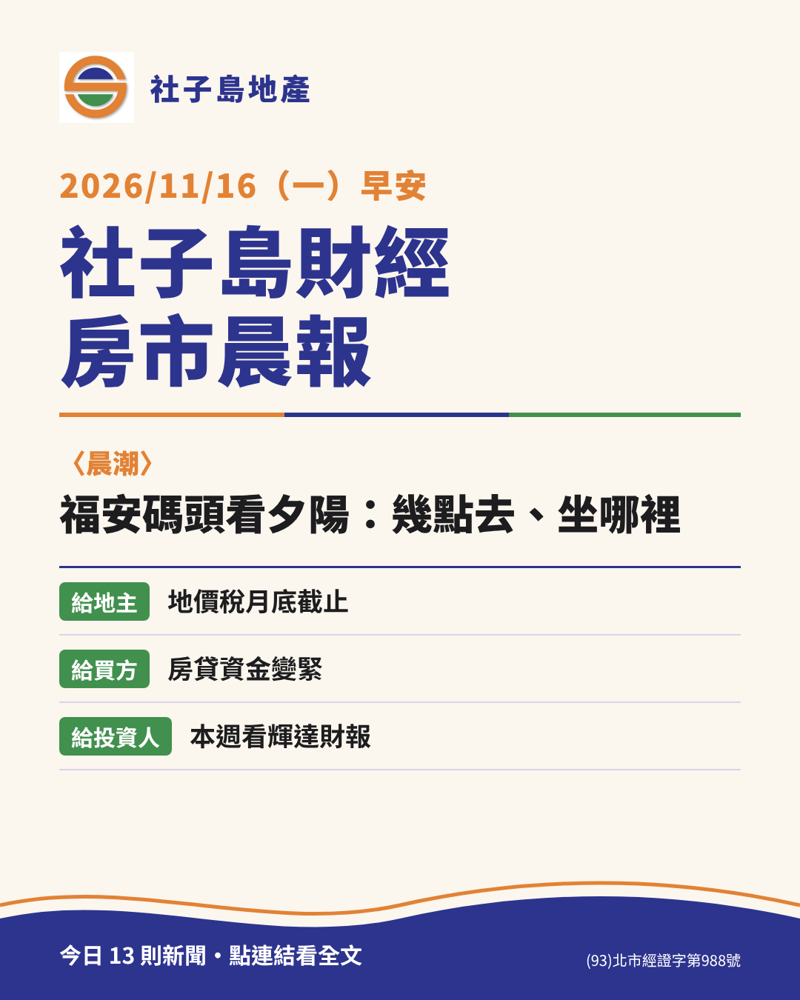

2026/11/16 (一) 早安
社子島財經房市晨報｜福安碼頭看夕陽：幾點去、坐哪裡
今日 13 則財經與房市新聞，依主題分成 6 類，社子島、主商圈與台北市的新聞排在最前面。點標題就能開啟原文。
〈潮汐表〉今天的三道潮水
- 給地主地價稅11月30日截止；自用住宅用地若騎樓堆物、出租停車，可能失去減免，稅單先核對一次。
- 給買方科技大廠搶辦聯貸、排擠房貸資金，撥款排隊變長；看屋前先和銀行確認貸款條件與時程。
- 給投資人本週焦點是輝達18日清晨財報；今天也是非金控上市公司第三季財報申報期限。
〈晨潮〉堤上散步
福安碼頭看夕陽：幾點去、坐哪裡
昨天在堤防上，阿公問我們：「阮少年時，收工就坐佇福安碼頭遐看日頭落山。這馬猶有人專工來看無？欲看，幾點去上媠、坐佗位上好？」答案是：有，而且不少。翻開網路上的旅遊和攝影分享，福安碼頭和附近的中社小碼頭，常被列進「台北看夕陽的好地方」。
福安碼頭在福安河濱公園裡。依臺北市水利工程處的介紹，這座河濱公園約2.2公頃，福安宮旁還留著一個小碼頭，讓來的人停下腳步懷懷古。從延平北路往堤防外走，到了堤外，河面一下子就打開了。
幾點去最好？這個季節，太陽大約下午5點出頭落下（依天文推算，11月中旬約5點05分前後；當天實際時刻可查中央氣象署的日出日沒時刻）。我們建議4點半前到，看河面從白亮慢慢轉成金色；太陽落下以後別急著走，天邊的顏色往往還會再變一輪，那才是老島民最熟悉的晚霞。
坐哪裡？常來拍照的朋友分享過兩個位置：一是大榕樹旁的觀景平台，平坦好走，適合帶長輩和小孩；二是碼頭前的浮台，前景有停靠的漁船、小艇，拍起來最有味道，但空間小，退潮時走動要特別小心。冬天的太陽偏南，會落在對岸蘆洲那一側；季節一換，落點也跟著移，所以常來的人說，每一季的福安碼頭都不一樣。
去福安碼頭看夕陽：三個小提醒
- ① 4點半前到：11月中旬日落約下午5點出頭（依天文推算，實際以中央氣象署日出日沒時刻為準）
- ② 想安心看：大榕樹旁平台；想拍照：碼頭浮台，退潮時腳下小心
- ③ 出門前查淡水河潮汐；冬天天黑得快，帶長輩小孩回程注意腳下
出門前，順手查一下淡水河的潮汐。漲潮時河面飽滿，倒影最漂亮；退潮時露出灘地，小船斜躺在岸邊，又是另一種畫面。看完夕陽，沿著堤防往中社小碼頭散步過去，剛好走一段晚風。
阿公年輕時看的那片夕陽，今天還在。我們常想：社子島未來開發以後，這段河岸會是什麼樣子？碼頭、老榕樹和看夕陽的人，能不能一起留下來？這是我們很想陪您一起關心的事。往下滑，有今天的新聞；最後在〈廟口泡茶區〉，我們等您來電。
——社子島地產團隊
主商圈：社子島・北士科・關渡洲美平原3 則
黃仁勳請辭後，北士科「輝達宅」熱度能否延續仍是話題；北市府說明輝達北士科海外總部籌建如期推進，預計11月底召開都審委員會審議。社子島計畫仍在內政部審議，關渡洲美平原本週無新進度
台北市1 則
台股表現亮眼，北市豪宅買氣回升，交易量年增23.9%
利率・房貸・資金4 則
高科技大廠搶辦聯貸，排擠民眾房貸資金，一般房貸利率拉高、撥款排隊變長；建築業者呼籲央行解除第七波限貸令
都更・老屋2 則
今年前三季住宅拆除執照年減逾2成，全年恐創新低；危老條例明年5月底屆期，修法草案已送立法院
稅務與法律實務1 則
地價稅繳納期限11月30日；自用住宅用地若騎樓堆物、出租停車，可能失去減免
今日財經大事2 則
今天台股開盤，本週焦點是輝達台灣時間18日清晨的財報；今天也是非金控上市公司第三季財報申報期限
〈阿公講古〉
週一傍晚，阿公沿著淡水河慢慢走，走到福安碼頭，在大榕樹下坐了下來。
「五點出頭就落山矣，」阿公看著對岸說：「阮少年時無錶仔，看日頭落到佗位，就知影該轉去食飯矣。」
幾個年輕人架著相機等夕陽，阿公看了笑笑：「早前是阮佇遮看日頭，這馬是日頭佇遮看恁。」
河水正慢慢漲上來，碼頭邊的小船跟著浮高。阿公想起小時候大人的話，轉頭問：「阮細漢，大人攏講『初一十五，水上大』。這是真的，抑是古早人隨便講的？報紙寫的潮汐表，到底欲按怎看？」
阿公的問題，我們明天回答。
〈廟口泡茶區〉
阿公從淡水河邊走回來，廟口榕樹下的茶剛好泡開。看夕陽不用趕，土地買賣也一樣，先把事情看清楚。
想賣一塊地，第一步不是開價，而是把權狀、持分、分區弄清楚；這一段，我們陪您一起整理。
也想問問您：您上一次在社子島看夕陽，是什麼時候、在哪裡？打個電話告訴我們，說不定哪天就寫進晨報。
不急著成交。我們是守在堤邊的人，守著每一塊土地的權益，直到把它交到願意耕耘它的人手上。
📞 歡迎先來電 0922-252-969先通個電話聊聊，再約時間來廟口喝茶。
 掃描 QR code，加 LINE 好友LINE ID：@shezidao💬 加 LINE
掃描 QR code，加 LINE 好友LINE ID：@shezidao💬 加 LINE
社子島地產團隊｜service@shezidao.com.tw
台北市士林區延平北路九段288號
週一至週六 9:30–18:00（週四 9:30–13:30），週日公休📞 來電 0922-252-969
本站由社子島地產開發有限公司經營，為民間不動產資訊網站，非臺北市政府官方網站；政府公告請以臺北市政府與地政局網站為準。
本期新聞由社子島地產團隊自聯合新聞網、Yahoo奇摩新聞、民報、經濟日報、中時新聞網、udn房地產、自由時報地產天下、大紀元、ETtoday財經雲 等來源收集，標題照原文，點擊即可開啟原始報導；〈晨潮〉地點資料參考臺北市政府工務局水利工程處福安河濱公園介紹與網路旅遊攝影分享，現場設施與日落時刻以實地與中央氣象署為準。〈晨潮〉〈阿公講古〉為本團隊之參考意見，不構成投資建議，亦不代表支持任何候選人。〈阿公講古〉的阿公，是我們依島上長輩的身影寫成的人物。